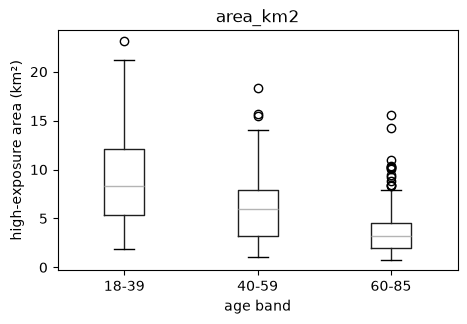
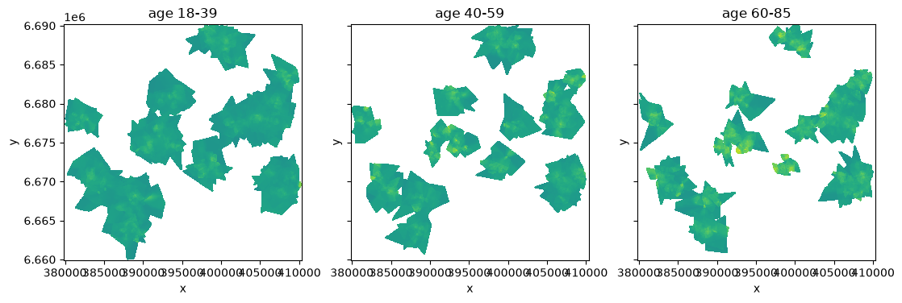
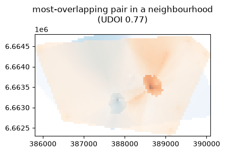

Activity spaces of survey respondents#
Question. Each respondent of a map survey has an activity-space raster. How large are the activity spaces, how do they differ between age groups, and where do neighbours’ activity spaces overlap?
import tempfile, pathlib
import numpy as np, pandas as pd, matplotlib.pyplot as plt
import entityraster as er
from entityraster import synth
# synthetic survey: 400 respondents with attributes and one activity-space GeoTIFF each
data = synth.make_dataset(tempfile.mkdtemp(), n=400, seed=11)
# keep only the plain survey attributes (no geometry or raster columns), as a researcher's table would be
survey = pd.DataFrame(data.people.drop(columns=["geometry", "activity_space", "path"])).rename(columns={"person_id": "uid"})
# group ages into three bands for later comparisons
survey["age_band"] = pd.cut(survey["age"], [17, 39, 59, 85], labels=["18-39", "40-59", "60-85"])
survey.head(3)
| uid | age | income | gender | employed | neighbourhood | radius_true | n_places | age_band | |
|---|---|---|---|---|---|---|---|---|---|
| 0 | 0 | 75 | 31365.418003 | male | False | 5 | 662.059978 | 6 | 60-85 |
| 1 | 1 | 30 | 21378.471667 | female | False | 5 | 940.708576 | 8 | 18-39 |
| 2 | 2 | 52 | 30383.222817 | female | True | 17 | 919.083393 | 6 | 40-59 |
1. Attach the rasters#
# attach one raster per person, matched by the uid column through the file name pattern
gdf = er.embed(survey, data.out_dir / "rasters", on="uid", pattern="p{uid:05d}.tif", column="activity_space", index="uid")
# rows without a matching file, and the number of rows in the result
gdf.attrs["embed_report"]["unmatched_rows"], len(gdf)
([], 400)
2. How big are they?#
# area of each person's high-exposure cells (value >= 0.5), converted from m2 to km2
gdf["area_km2"] = gdf["activity_space"].raster.area(0.5, relative=True) / 1e6
# summarise the per-person areas by age band
tab = gdf.groupby("age_band", observed=True)["area_km2"].agg(["count", "mean", "median"]).round(2)
tab
| count | mean | median | |
|---|---|---|---|
| age_band | |||
| 18-39 | 140 | 8.93 | 8.33 |
| 40-59 | 109 | 6.13 | 5.96 |
| 60-85 | 151 | 3.87 | 3.16 |
fig, ax = plt.subplots(figsize=(5, 3.2))
# one box per age band
gdf.boxplot(column="area_km2", by="age_band", ax=ax, grid=False)
ax.set_ylabel("high-exposure area (km²)"); ax.set_xlabel("age band"); plt.suptitle("");

3. Where do the age groups’ activity spaces fall?#
Group mean surfaces on one shared grid. Because each raster only covers the person’s own home range, we say outside="unknown": a cell is averaged over the people whose range includes it.
# mean activity-space surface per age band, stacked on one shared grid (an xarray object)
cube = gdf.rst.surface("activity_space", by="age_band", outside="unknown")
fig, ax = plt.subplots(1, 3, figsize=(13, 3.8), sharex=True, sharey=True)
# one map panel per age band, all with the same colour scale
for a, band in zip(ax, cube["age_band"].values):
cube.sel(age_band=band).plot(ax=a, cmap="viridis", vmin=0, vmax=1, add_colorbar=False)
a.set_title(f"age {band}"); a.set_aspect("equal")

How many respondents contribute to each cell tells you where to trust the map:
n_obs = gdf.rst.surface("activity_space", stat="count", threshold=0.0) # people with any value in each cell
float(n_obs.max()), float((n_obs > 0).mean())
(36.0, 0.4025687576209186)
4. Where do neighbours’ activity spaces overlap?#
# UDOI overlap for pairs of people living in the same neighbourhood; cells outside a raster count as 0
ov = gdf["activity_space"].rst.overlap("udoi", outside="zero", by=gdf["neighbourhood"])
ov["value"].describe().round(3)
count 3863.000
mean 0.209
std 0.150
min 0.000
25% 0.087
50% 0.189
75% 0.312
max 0.767
Name: value, dtype: float64
# the pair with the highest overlap; i and j are the two people's ids
best = ov.sort_values("value", ascending=False).iloc[0]
fig, ax = plt.subplots(figsize=(4.5, 4.5))
# draw both people's rasters on the same axes to see the overlap
for uid, colour in ((best.i, "tab:blue"), (best.j, "tab:orange")):
gdf.loc[uid, "activity_space"].plot(ax=ax, alpha=0.55, cmap="Blues" if colour == "tab:blue" else "Oranges")
ax.set_title(f"most-overlapping pair in a neighbourhood\n(UDOI {best.value:.2f})");

5. Hand the result to GIS software#
# write the group surfaces as a GeoTIFF and the table as GeoParquet in a temporary folder
out = pathlib.Path(tempfile.mkdtemp())
er.to_geotiff(cube, out / "age_band_surfaces.tif")
er.to_geoparquet(gdf, out / "respondents.parquet")
sorted(p.name for p in out.iterdir())
['age_band_surfaces.tif', 'respondents.parquet']